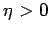
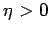
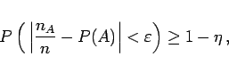
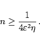

Inhalt Index DeskTop Bronstein

 Wahrscheinlichkeitsrechnung und Mathematische Statistik Wahrscheinlichkeitsrechnung Gesetze der großen Zahlen, Grenzwertsätze
Wahrscheinlichkeitsrechnung und Mathematische Statistik Wahrscheinlichkeitsrechnung Gesetze der großen Zahlen, Grenzwertsätze


Bei beliebig vorgegebenen Zahlen  und  ist
und  ist
|  | (16.104a) |
wenn
|  | (16.104b) |
Weitere Gesetze dieser Art s. Lit. 16.6, 16.21.
| Beispiel |
|
Wievielmal muß man würfeln, um mit einer Wahrscheinlichkeit von mindestens 95 % darauf schließen zu können, daß sich die Wahrscheinlichkeit des Auftretens der Augenzahl Sechs von der beobachteten relativen Häufigkeit höchstens um den Betrag 0,01 unterscheidet? |